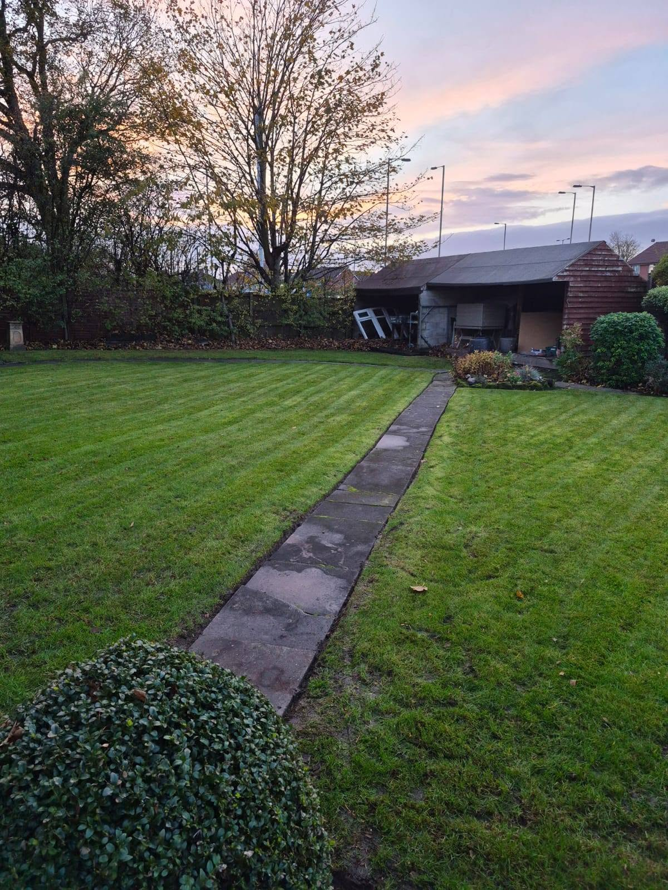
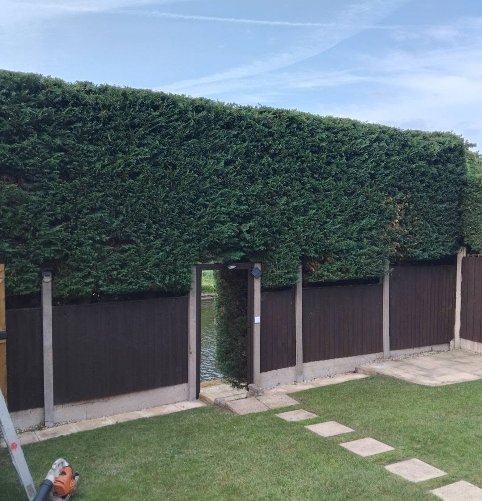
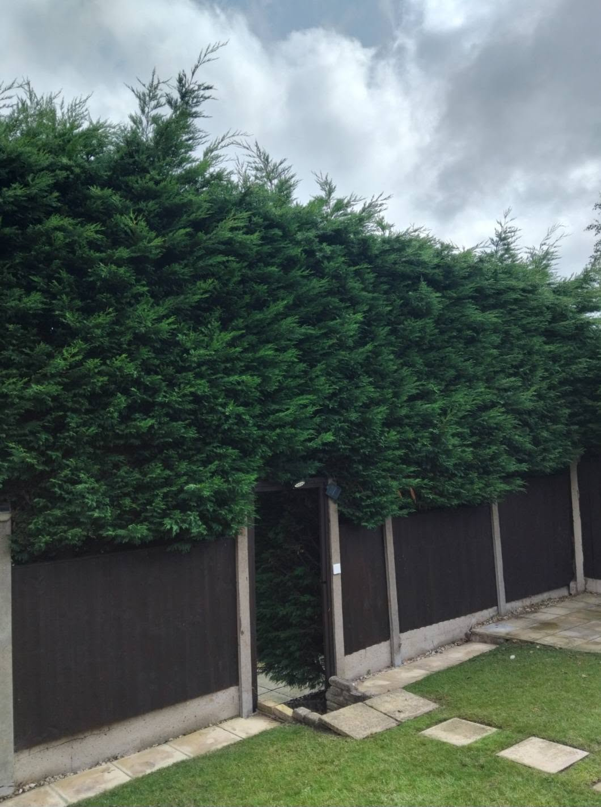
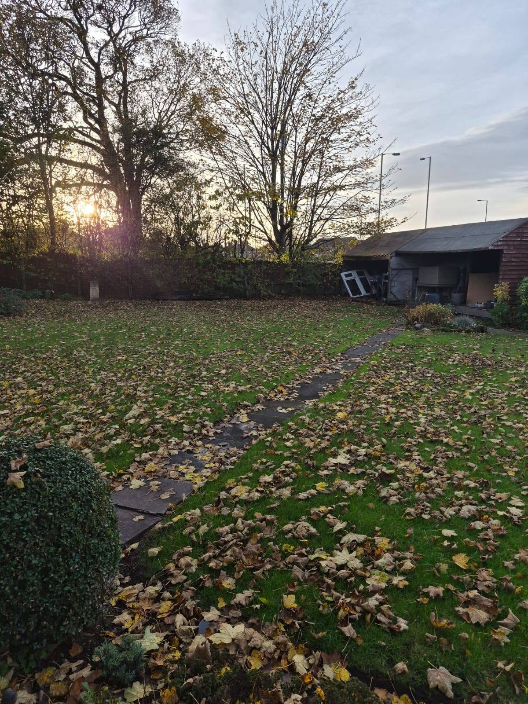
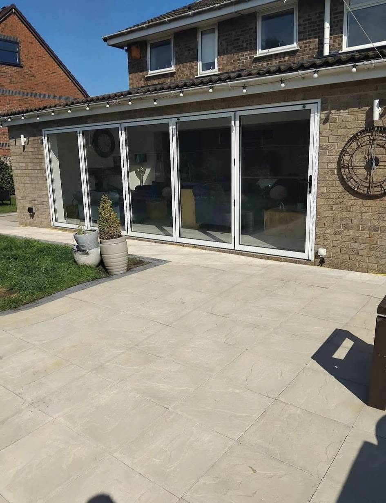
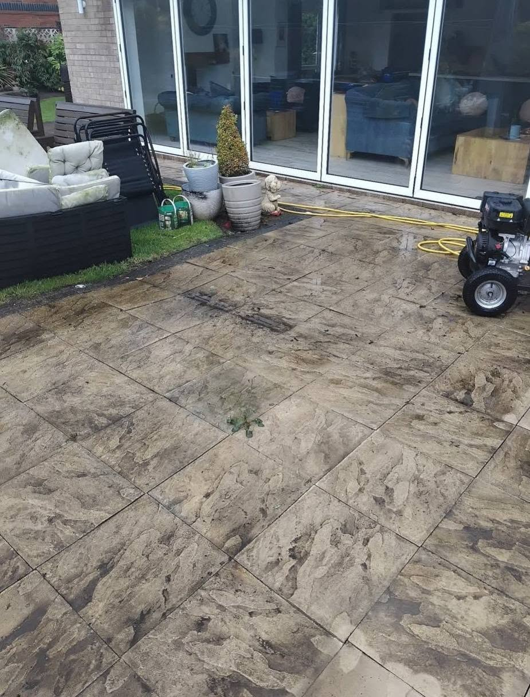
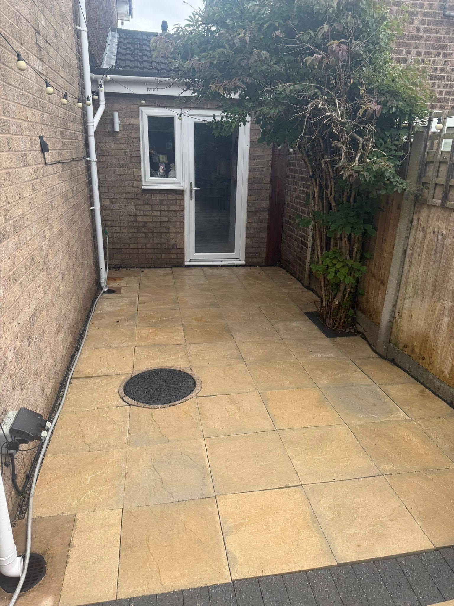
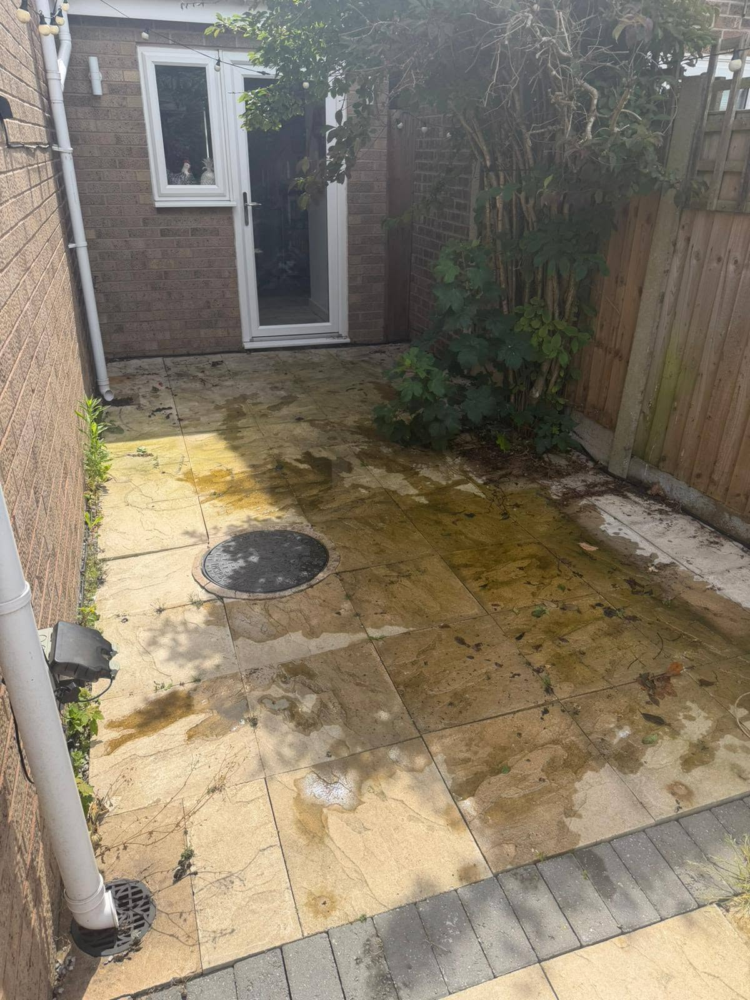
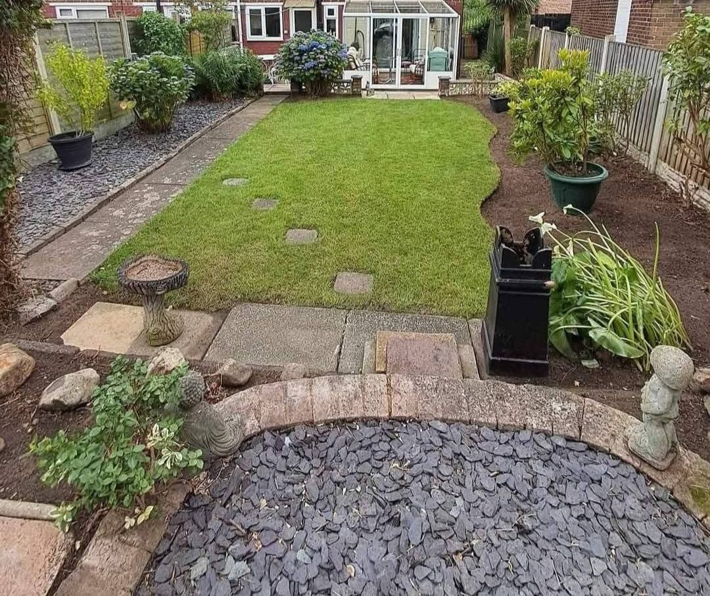
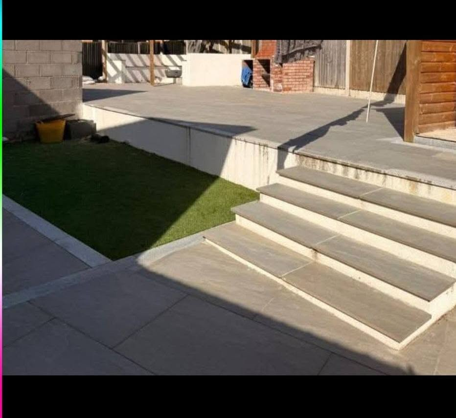

Garden specialistsLawn & garden care

LAWN • GARDEN • EXTERIOR CARE
YOUR GARDEN.TAMED.
Lawns • Hedges • Garden Tidy-Ups • Patios • Exterior Cleaning
From overgrown gardens to tired patios, Lawn Monster transforms outdoor spaces with reliable care and proper attention to detail.
Free no-obligation quotes
Reliable local serviceRuncorn & surrounding areas
One-off or regularMaintenance to clearances
Exterior cleaningPatios, paths & paving
WHAT WE DO
Outdoor spaces, properly looked after.
Lawn Monster combines garden care with exterior cleaning, so one local team can keep the whole outside of your property looking sharp.
Lawn care & mowing
Regular cutting, edging and general lawn upkeep for a clean, cared-for finish.
Hedge cutting
Hedge trimming, reductions and tidy shaping to bring overgrowth back under control.
Garden tidy-ups
Seasonal tidy-ups, pruning, border work and general maintenance.
Garden clearances
Take an overgrown or neglected space and turn it back into a garden you can enjoy.
Patio & paving cleaning
Remove built-up grime, algae and weathering from patios, paving and paths.
Exterior cleaning
Pressure washing for outdoor hard surfaces around the home and garden.
REAL TRANSFORMATIONS
See the difference.
Drag the sliders to compare genuine Lawn Monster project photos.


↔
BEFOREAFTER
↔
BEFOREAFTER

↔
BEFOREAFTER

↔
BEFOREAFTERRECENT WORK
Gardens that look cared for.


LAWN MONSTER
More than just lawn cutting.
Lawn Monster looks after the whole outdoor space — from lawns and hedges to clearances, patios and exterior cleaning. Ideal for homeowners who want one reliable local service for the jobs that keep a garden looking its best.
Based in
Runcorn
Areas coveredRuncorn, Widnes, Frodsham, Helsby, Liverpool and Cheshire West & Chester.
CallEmailREADY TO GET YOUR GARDEN SORTED?
Get a free quote today.
Call or WhatsApp Lawn Monster and send over a few photos of the job.